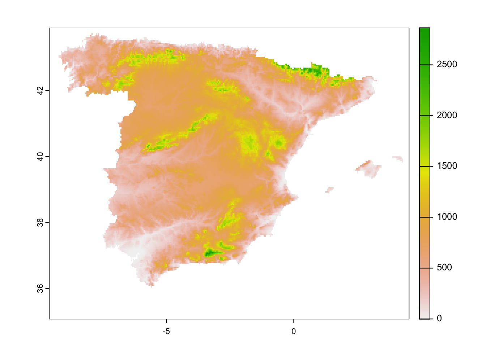
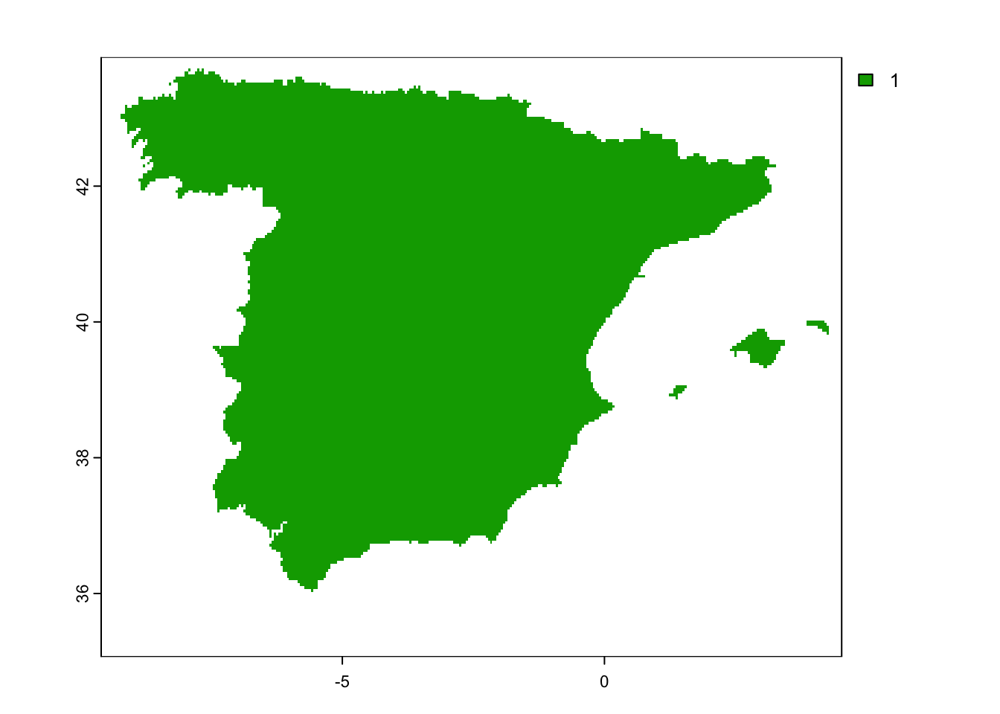
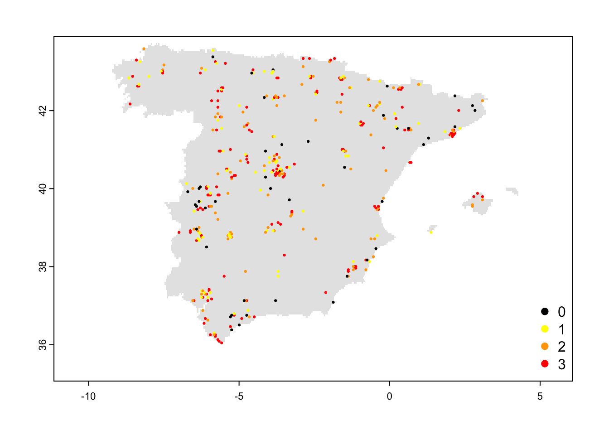

RStudio project
Open the RStudio project that we created in the first session. I recommend to use this RStudio project for the entire module and within the RStudio project create separate R scripts for each session.
# Session Occ-2: Species data
and save the file in your folder “scripts” within your project folder,
e.g. as “Occ2_SpeciesData.R”In ecology and conservation, we are often interested in how species are distributed in space and time and how environmental factors are influencing this distribution. This knowledge is important, for example, for deriving management decisions, and for planning or assessing the efficiency of protected areas.
Species distributions can be readily estimated from species occurrence data that can originate from standardised surveys, opportunistic sightings or museum and herbarium collections. Yet, potential sampling biases can arise when monitoring species populations. For example, species may go undetected at sites although present. Detectability may also vary across space and time, and of course between different observers. Not considering the imperfect detection in analyses and models can considerable bias estimates of species distribution and can underestimate occupancy, obscure trends in occupancy, or obscure relationships with covariates.
Occupancy (or occupancy-detection) models can deal with imperfect detection in species distribution modelling Kéry and Royle (2015). This is done by quantifying the detectability, the probability that at least one individual is detected in a particular sampling effort, conditional to the species being present in the area of interest during sampling. To be able to estimate the effect of imperfect detection we need to perform several independent surveys of the same site (temporal or spatial replication). Repeat surveys allow us to answer the question: “How often do we fail to detect the species in sites where we know it occurs as it had been detected on other survey occasions?”
In the next few practicals, we will learn how to fit simple occupancy models, analyses these and make predictions. But first of all, we will take a closer look at the different kinds of data required for occupancy models.
One of the most important and time-consuming steps of occupancy modelling and many data analyses is actually the data preparation. Here, we will work with eBird data. eBird is a semi-structured citizen science project (https://ebird.org) with flexible, easy to follow protocols that attract many participants. It offers a real-time, online bird checklist. It mostly contains opportunistic sightings. But as eBird also collects metadata on the observation process (e.g. amount of time spent birding, number of observers, etc.), the data can also be useful for occupancy modelling.
Here, we will use the rebirdpackage that provides an R
interface to the eBird webservices. Accessing eBird data through the API
server requires an API key, meaning a token to use the API, which is
linked to your personal eBird account. If you don’t have a key, you can
obtain one from https://ebird.org/api/keygen.
library(rebird)Most functions for data queries use a specific species code. A list with the entire taxonomy is stored internally:
# Look at eBird taxonomy
rebird:::tax## # A tibble: 16,753 × 15
## sciName comName speciesCode category taxonOrder bandingCodes comNameCodes
## <chr> <chr> <chr> <chr> <dbl> <chr> <chr>
## 1 Struthio c… Common… ostric2 species 1 <NA> COOS
## 2 Struthio m… Somali… ostric3 species 6 <NA> SOOS
## 3 Struthio c… Common… y00934 slash 7 <NA> SOOS,COOS
## 4 Rhea ameri… Greate… grerhe1 species 8 <NA> GRRH
## 5 Rhea penna… Lesser… lesrhe2 species 14 <NA> LERH
## 6 Rhea penna… Lesser… lesrhe4 issf 15 <NA> LERH,LR
## 7 Rhea penna… Lesser… lesrhe3 issf 18 <NA> LERH,LR
## 8 Nothocercu… Tawny-… tabtin1 species 19 <NA> TBTI
## 9 Nothocercu… Highla… higtin1 species 20 HITI <NA>
## 10 Nothocercu… Highla… higtin2 issf 21 <NA> HT,HITI
## # ℹ 16,743 more rows
## # ℹ 8 more variables: sciNameCodes <chr>, order <chr>, familyCode <chr>,
## # familyComName <chr>, familySciName <chr>, reportAs <chr>, extinct <lgl>,
## # extinctYear <int>We can also find the species code for a specific species. The
function species_code() requires the scientific name of the
species. Let’s look up the species code for the red kite (Milvus
milvus):
species_code('Milvus milvus')## Red Kite (Milvus milvus): redkit1## [1] "redkit1"The rebird package offers several functions to query
data at a specific location or within a specific region, for a specific
species or for all species. For an overview of all functions look up the
list of functions library(help='rebird') or look at the
vignette vignette('rebird_vignette').
We will first query data for the red kite in Spain using the function
ebirdregion(). Look up the help page
?ebirdregion to understand the different arguments. It only
provides the most recent sightings (between 1 and 30 days; 14 days per
default). For the query, we have to provide the personal access token
for the API.
# Find all eBird reportings of red kite in Spain in the last 30 days:
ebirdregion(loc = 'WS', species = 'redkit1', back=30, key=MY_EBIRD_KEY)## # A tibble: 0 × 0To access periods that are longer away than the last 30 days, we can
use the function ebirdhistorical().
library(tidyverse)## ── Attaching packages ─────────────────────────────────────── tidyverse 1.3.2 ──
## ✔ ggplot2 3.4.2 ✔ purrr 1.0.1
## ✔ tibble 3.2.1 ✔ dplyr 1.0.10
## ✔ tidyr 1.2.1 ✔ stringr 1.5.0
## ✔ readr 2.1.4 ✔ forcats 0.5.2
## ── Conflicts ────────────────────────────────────────── tidyverse_conflicts() ──
## ✖ dplyr::filter() masks stats::filter()
## ✖ dplyr::lag() masks stats::lag()# Get historical data for Spain and filter for red kite
# The command "%>%" is called a pipe and directs the output to the next function
ebirdhistorical(loc = 'ES', date='2022-06-01', fieldSet='full', key=MY_EBIRD_KEY) %>%
filter(speciesCode=='redkit1')## # A tibble: 1 × 28
## speciesCode comName sciName locId locName obsDt howMany lat lng obsValid
## <chr> <chr> <chr> <chr> <chr> <chr> <int> <dbl> <dbl> <lgl>
## 1 redkit1 Red Kite Milvus … L190… Arroyo… 2022… 2 40.9 -5.67 TRUE
## # ℹ 18 more variables: obsReviewed <lgl>, locationPrivate <lgl>, subId <chr>,
## # subnational1Code <chr>, subnational1Name <chr>, countryCode <chr>,
## # countryName <chr>, userDisplayName <chr>, obsId <chr>, checklistId <chr>,
## # presenceNoted <lgl>, hasComments <lgl>, firstName <chr>, lastName <chr>,
## # hasRichMedia <lgl>, subnational2Code <chr>, subnational2Name <chr>,
## # exoticCategory <chr>The function ebirdhistorical() only downloads one day at
a time. Thus, if we want to download data for an extended period, we
have to do this step by step. Below, we use the function
lapply() to go through each day between the specified dates
of 1-April-2022 to 30-June-2022, download the eBird data for Spain for
that day, and afterwards bind the output of all days together using the
function bind_rows().
# Download eBird detection in Spain for the months April-June 2022:
ebd_Esp_2022 <- bind_rows(
# Apply the download function to each day in the provided date sequence and collect output in a list
lapply(seq(as.Date('2022/04/01'),as.Date('2022/06/30'),'days'), FUN=function(x){
ebirdhistorical(loc = 'ES', date=x, fieldSet='full', key=MY_EBIRD_KEY)
}))# Inspect the resulting data
glimpse(ebd_Esp_2022)## Rows: 26,401
## Columns: 28
## $ speciesCode <chr> "tawowl1", "grnwoo3", "ibechi2", "cirbun1", "eursco1"…
## $ comName <chr> "Tawny Owl", "Iberian Green Woodpecker", "Iberian Chi…
## $ sciName <chr> "Strix aluco", "Picus sharpei", "Phylloscopus ibericu…
## $ locId <chr> "L18329865", "L18329803", "L18329803", "L18329803", "…
## $ locName <chr> "Sinarcas--Casa De La Lurdilla", "21110, Aljaraque ES…
## $ obsDt <chr> "2022-04-01 22:57", "2022-04-01 22:53", "2022-04-01 2…
## $ howMany <int> 1, 1, 1, 1, 1, 2, 7, 2, 9, 4, 2, 5, 2, 1, 3, 7, 1, 1,…
## $ lat <dbl> 39.70067, 37.27260, 37.27260, 37.27260, 37.11031, 37.…
## $ lng <dbl> -1.169880, -7.060195, -7.060195, -7.060195, -3.570006…
## $ obsValid <lgl> TRUE, TRUE, TRUE, TRUE, TRUE, TRUE, TRUE, TRUE, TRUE,…
## $ obsReviewed <lgl> FALSE, FALSE, FALSE, FALSE, FALSE, FALSE, FALSE, FALS…
## $ locationPrivate <lgl> TRUE, TRUE, TRUE, TRUE, TRUE, TRUE, FALSE, FALSE, FAL…
## $ subId <chr> "S106035557", "S106035206", "S106035206", "S106035206…
## $ subnational2Code <chr> "ES-VC-VN", "ES-AN-HL", "ES-AN-HL", "ES-AN-HL", "ES-A…
## $ subnational2Name <chr> "Valencia", "Huelva", "Huelva", "Huelva", "Granada", …
## $ subnational1Code <chr> "ES-VC", "ES-AN", "ES-AN", "ES-AN", "ES-AN", "ES-AN",…
## $ subnational1Name <chr> "Valenciana, Comunidad", "Andalucía", "Andalucía", "A…
## $ countryCode <chr> "ES", "ES", "ES", "ES", "ES", "ES", "ES", "ES", "ES",…
## $ countryName <chr> "Spain", "Spain", "Spain", "Spain", "Spain", "Spain",…
## $ userDisplayName <chr> "Samuel Aunión Díaz", "Juanjo Cipriano", "Juanjo Cipr…
## $ obsId <chr> "OBS1380130916", "OBS1380131253", "OBS1380131255", "O…
## $ checklistId <chr> "CL27771", "CL27453", "CL27453", "CL27453", "CL28048"…
## $ presenceNoted <lgl> FALSE, FALSE, FALSE, FALSE, FALSE, FALSE, FALSE, FALS…
## $ hasComments <lgl> FALSE, FALSE, FALSE, FALSE, FALSE, FALSE, FALSE, FALS…
## $ firstName <chr> "Samuel", "Juanjo", "Juanjo", "Juanjo", "Alfonso", "C…
## $ lastName <chr> "Aunión Díaz", "Cipriano", "Cipriano", "Cipriano", "C…
## $ hasRichMedia <lgl> FALSE, FALSE, FALSE, FALSE, FALSE, FALSE, FALSE, FALS…
## $ exoticCategory <chr> NA, NA, NA, NA, NA, NA, "N", NA, NA, NA, NA, NA, NA, …These data also contain observations from other species. For
simplicity, we will assume here that non-reporting of the red kite in a
location means that the red kite was not observed at that time. This is
a stark simplification. We use this assumption here as we want to
demonstrate occupancy models with comparably simple yet open-access
data. The rebird package provides such very simple means
for working with eBird data. However, please be aware that our
oversimplified workflow does not correspond to best practices for
working with eBird data. These best practices and more elaborate
workflows are described here: https://cornelllabofornithology.github.io/ebird-best-practices.
Our goal is to prepare a dataset that can be used in occupancy modelling. This should contain information about repeat visits to different sites. For simplicity, we will compile a dataset that contains repeat visits in the three consecutive months April-June. Thereby, we rasterise the observation data at a roughly 5 km spatial resolution.
First, we go through some preparatory steps:
# Replace any observations from other species than the red kite with zero
redkite_Esp_2022 <- ebd_Esp_2022
redkite_Esp_2022$howMany <- ifelse(redkite_Esp_2022$speciesCode==species_code('Milvus milvus'), redkite_Esp_2022$howMany, 0)## Red Kite (Milvus milvus): redkit1# Add a column for red kite presence
redkite_Esp_2022$RedKite <- ifelse(redkite_Esp_2022$howMany > 0, 1, 0)Now, we use the geodata package to download a mask for
Spain. For example, when downloading elevation data, we can specifically
do so for a specific country. We download the data at a resolution of 30
seconds, which roughly corresponds to 1 km at the equator. We then
aggregate the data to a 2.5 minutes (roughly 5 km) spatial
resolution.
# Get mask for Spain
library(geodata)
library(terra)
elev_Esp_1km <- geodata::elevation_30s(country='ESP', path='data', mask=TRUE)
# Aggregate to ca. 5km resolution
elev_Esp_5km <- terra::aggregate(elev_Esp_1km, fact=5)
plot(elev_Esp_5km)
# Create mask of spain
mask_Esp_5km <- elev_Esp_5km
values(mask_Esp_5km)[!is.na(values(mask_Esp_5km))] <- 1
plot(mask_Esp_5km)
We now extract the cell numbers and coordinates for our eBird data -
at the spatial resolution of our SpatRaster object, meaning
roughly 5 km.
# Obtain coordinates and cell ID
redkite_Esp_2022 <- cbind(redkite_Esp_2022, terra::extract(x=mask_Esp_5km, y=redkite_Esp_2022[,c('lng','lat')], ID=F, cells=T, xy=T))
# Remove NA cells
redkite_Esp_2022 <- redkite_Esp_2022[!is.na(redkite_Esp_2022$ESP_elv_msk),]We now start reshaping our dataset. We want to obtain a dataset with a row for each location and different columns for each repeat visit.
# Make smaller dataset with fewer columns
redkite_det_Esp_2022 <- redkite_Esp_2022[,c('obsDt','cell','x','y','RedKite')]
# Add columns for day of year, week, and month
library(lubridate)
redkite_det_Esp_2022$yday <- yday(as.Date(redkite_det_Esp_2022$obsDt, format="%Y-%m-%d"))
redkite_det_Esp_2022$week <- week(as.Date(redkite_det_Esp_2022$obsDt, format="%Y-%m-%d"))
redkite_det_Esp_2022$month <- month(as.Date(redkite_det_Esp_2022$obsDt, format="%Y-%m-%d"))
# Remove duplicate rows (rows with exact same cell, yday, and presence/absence of red kite)
redkite_det_Esp_2022 <- redkite_det_Esp_2022[!duplicated(redkite_det_Esp_2022[,-1]),]
# We now may have some rows left that report presences and absences for the exact same cell and month:
sum(duplicated(redkite_det_Esp_2022[,c('cell','month')]))## [1] 4081duplos <- which(duplicated(redkite_det_Esp_2022[,c('cell','month')]))
# Loop through the entries with the same cell and month combination:
for (i in duplos) {
cell_i = redkite_det_Esp_2022[i,'cell']
month_i = redkite_det_Esp_2022[i,'month']
# If we have a presence and an absence observation on the same day and location, we assume it is a presence:
redkite_det_Esp_2022[redkite_det_Esp_2022$cell==cell_i & redkite_det_Esp_2022$month==month_i, 'RedKite'] <- 1
}
# Remove remaining duplicate rows (only filtering for cells and months):
redkite_det_Esp_2022 <- redkite_det_Esp_2022[!duplicated(redkite_det_Esp_2022[,c(2:5,8)]),]The hard work is done now and we have a dataset that only has unique cell-by-month combinations with sightings and non-sightings of the red kite. Last, we only want to keep those cells that were visited in each of the three months.
# Find those cells with more than 2 visits:
cell_keep <- as.numeric(
names(table(redkite_det_Esp_2022$cell))[
table(redkite_det_Esp_2022$cell)>2
])
# Remove cells with 2 visits or less:
redkite_det_Esp_2022 <- redkite_det_Esp_2022[redkite_det_Esp_2022$cell %in% cell_keep,]Finally, we reshape our dataset from a long format (with all repeat visits in rows) to a wide format (with separate columns for the repeat visits):
# Reshape the dataset from long to wide format:
redkite_det_Esp_2022_wide <- redkite_det_Esp_2022[,c(2:5,8)] %>%
pivot_wider(
names_from = month,
values_from = RedKite,
names_prefix = 'month',
values_fill = NA
)
# How often was the red kite observed over the three visits?
table(rowSums(redkite_det_Esp_2022_wide[,4:6]))##
## 0 1 2 3
## 44 83 108 153Let’s take a look at the resulting map.
# plot mask of Spain
plot(mask_Esp_5km, col='grey90', legend=F)
# Add points
points(redkite_det_Esp_2022_wide[,2:3],pch=19,col=c('black','yellow','orange','red')[as.factor(rowSums(redkite_det_Esp_2022_wide[,4:6]))], cex=0.3)
legend('bottomright', legend=0:3, pch=19, col=c('black','yellow','orange','red'), bty='n')
Finally, save your data, for example by writing the final data frame to file or by saving the R object(s).
save(redkite_det_Esp_2022_wide,file='data/redkite_det_Esp_2022_wide.RData')